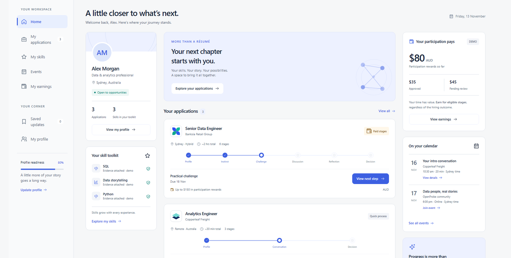
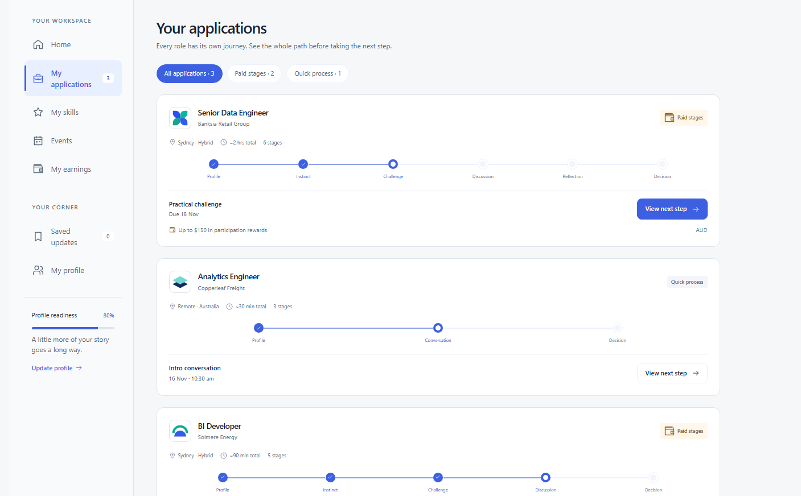
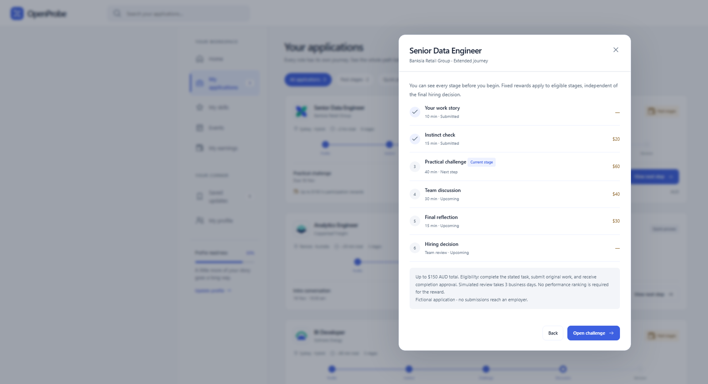

Build in Public, Day 4: What If Job Hunting Had a Home Feed?
On Day 3, I built the recruiter’s side, turning a client brief into a hiring project. Today I switched seats and worked on the applicant’s side.
The problem
Job hunting gets scattered fast. Applications, skills, updates and interviews all live in different places, and it’s easy to lose track of where you stand.
One home for the applicant
I wanted one place where someone could see their applications, skills, recent updates and upcoming conversations without losing track of where they stand.

The dashboard brings together:
- Application journeys with visible stages and next steps
- A personal skills toolkit with example evidence
- Recent activity and upcoming events
- A participation earnings concept for longer assessments
Every role has its own journey
Each application shows its whole path before you take the next step. A longer process might run from profile and instinct check through a challenge, a discussion and a reflection to the decision. A quick process might be only a profile, a conversation and a decision. Applicants can filter between paid stages and quick processes.

Paid participation
This is the idea I want to explore further. If a hiring process asks candidates to invest substantial time in challenges and discussions, could employers offer a fixed reward for completing eligible stages, even if the candidate doesn’t get the role?
In the prototype, applicants can see every stage and its reward before they begin. Rewards depend on completing the stated task with original work, not on a performance ranking, and they’re independent of the final hiring decision. The dashboard shows pending and approved rewards.

Status
- This is still a static proof of concept.
- All data is fictional, and payments are simulated.
- Today was about making the applicant experience tangible and matching OpenProbe’s existing blue design.
It’s one small build, and one more part of the hiring journey is taking shape.
Get involved
OpenProbe is open source under the MIT licence. Explore the repo on GitHub, open an issue or share your view.
Would paid participation make you more willing to commit to a longer hiring process?
Outside my day role, I build NBA models for NoFlightZone. More posts are at travisjohn.github.io.